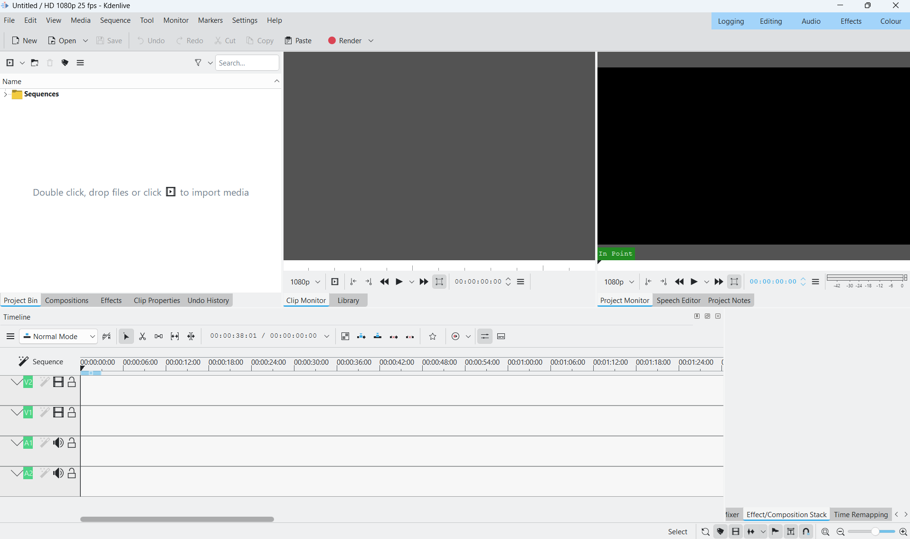
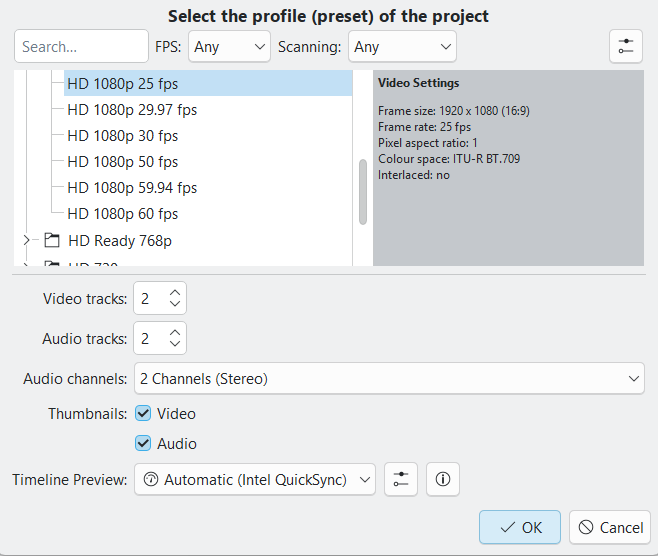

Εγκατάσταση και ρύθμιση¶
Σε αυτή τη σελίδα ετοιμάζεις τον υπολογιστή σου για όλα τα μαθήματα: το Kdenlive και, όταν χρειαστούν, το OBS Studio (Μάθημα 13) και το HandBrake (προαιρετικά, στην Επέκταση του Μαθήματος 14). Στους υπολογιστές του εργαστηρίου είναι συνήθως ήδη εγκατεστημένα· τότε πήγαινε κατευθείαν στη λίστα ελέγχου στο τέλος της σελίδας. Οι οδηγίες γράφτηκαν για Windows και για το Kdenlive 26.08.
1. Kdenlive¶
Έλεγξε πρώτα αν υπάρχει και ποια έκδοση είναι. Άνοιξε το Kdenlive και, από το μενού Help, δες την ένδειξη της έκδοσης (About Kdenlive). Στο υλικό χρησιμοποιούμε την 26.08. Σε παλαιότερες εκδόσεις μερικά μενού έχουν άλλα ονόματα (δες την αρχική σελίδα), και κάποια βήματα μπορεί να μην ταιριάζουν.
Εγκατάσταση
- Άνοιξε τη σελίδα https://kdenlive.org/download/ και κατέβασε την έκδοση για Windows.
- Τρέξε το πρόγραμμα εγκατάστασης και ακολούθησε τα βήματά του.
- Άνοιξε το Kdenlive και πήγαινε στην ενότητα 2.
Ίδια έκδοση με το εργαστήριο
Αν δουλεύεις και στο σπίτι, εγκατέστησε την ίδια έκδοση με τους υπολογιστές του εργαστηρίου. Έτσι οι οδηγίες, τα μενού και τα projects σου ταιριάζουν παντού.
2. Το πρώτο άνοιγμα¶
Στο πρώτο άνοιγμα βλέπεις κενό project, χωρίς πλάνα:

| Περιοχή | Πού βρίσκεται | Τι κάνει |
|---|---|---|
| Project Bin | αριστερά, στην καρτέλα «Project Bin» | Τα αρχεία που έχεις εισάγει στο project |
| Clip Monitor | στη μέση | Προεπισκόπηση ενός πλάνου πριν μπει στο timeline |
| Project Monitor | δεξιά | Προεπισκόπηση του αποτελέσματος του μοντάζ |
| Timeline | κάτω | Η γραμμή χρόνου: V1, V2 για βίντεο και A1, A2 για ήχο |
| Καρτέλες αριστερά | δίπλα στο Project Bin | Compositions, Effects, Clip Properties, Undo History |
| Καρτέλες κάτω δεξιά | δίπλα στο Timeline | Mixer, Effect/Composition Stack, Time Remapping |
| Κουμπιά πάνω | κύρια γραμμή εργαλείων | New, Open, Save, Undo, Redo, Cut, Copy, Paste και Render |
Πάνω δεξιά υπάρχουν οι διατάξεις εργασίας: Logging, Editing, Audio, Effects, Colour. Στο
μάθημα δουλεύουμε με την Editing. Αν η διάταξή σου δείχνει διαφορετική, πάτα την Editing.
Στην κορυφή του παραθύρου φαίνονται το όνομα του project και το προφίλ του, π.χ.
Untitled / HD 1080p 25 fps.
3. Το πρώτο σου project¶
- Πάτα File → New. Ανοίγει το παράθυρο Project Settings.
- Διάλεξε το προφίλ του μαθήματος. Για το Μάθημα 1 είναι HD 720p με 25 fps:

| Πεδίο | Τι κάνεις |
|---|---|
| Search, FPS, Scanning | Γράψε 720p στο Search ή στένεψε τη λίστα με τα φίλτρα FPS και Scanning |
| Η λίστα προφίλ | Επίλεξε το προφίλ με 25 fps. Τα προφίλ είναι ομαδοποιημένα σε φακέλους |
| Video Settings | Διάβασέ το πριν πατήσεις OK: για το Μ1 περιμένεις 1280 x 720 (16:9), 25 fps, pixel aspect ratio 1, Interlaced: no |
| Video tracks / Audio tracks | Άφησε 2 και 2: τα V1, V2 και A1, A2 |
| Audio channels, Thumbnails, Timeline Preview | Άφησε τις προεπιλογές |
- Πάτα OK. Στην κορυφή του παραθύρου πρέπει να γράφει το προφίλ που διάλεξες.
Η καρτέλα Proxy
Το παράθυρο έχει και τις καρτέλες Proxy, Markers και Metadata. Αν ο υπολογιστής σου είναι αργός και η προεπισκόπηση κολλά, ρώτα τον διδάσκοντα για τα proxy clips: αντίγραφα χαμηλής ανάλυσης που χρησιμοποιούνται μόνο κατά το μοντάζ.
Περισσότερα για τα προφίλ
Η επιλογή προφίλ εξηγείται αναλυτικά στο Μάθημα 2 §1.5.
4. Φάκελοι και αρχεία¶
Το Kdenlive θυμάται τη διαδρομή των πλάνων σου, δεν τα αντιγράφει. Αν τα μετακινήσεις μετά την εισαγωγή, θα δεις «missing clip» (Μάθημα 1 §1.1 και §1.7). Γι' αυτό:
- Φτιάξε έναν φάκελο ανά μάθημα, π.χ.
M1-entasi-iremia, με υποφάκελοfootageγια τα πλάνα και υποφάκελοexportsγια τις εξαγωγές, όπως ζητά το Μάθημα 1. - Βάλε τα πλάνα στον φάκελο πριν τα εισάγεις στο Kdenlive και μην τον μετονομάσεις.
- Αποθήκευε κάθε στάδιο ως ξεχωριστό
.kdenliveστον φάκελο του μαθήματος.
5. Δοκιμαστικό render¶
Πριν από το Μάθημα 1 έλεγξε ότι η εξαγωγή δουλεύει:
- Κατέβασε το πακέτο δειγμάτων εργαστηρίου και βάλε ένα σύντομο βίντεο στο Project Bin: σύρε το από την Εξερεύνηση μέσα στο παράθυρο ή χρησιμοποίησε το κουμπί εισαγωγής του Bin. Αν εμφανιστεί το μήνυμα «Switch to clip profile», πάτα Cancel (Μάθημα 1 §1.3).
- Σύρε το clip στο V1 και πάτα Ctrl+S. Αποθήκευσε ως
setup-test.kdenlive. - Πάτα Render (κύρια γραμμή εργαλείων ή Ctrl+Enter), διάλεξε MP4-H264/AAC,
Full Project, όρισε φάκελο και όνομα
setup-test.mp4και πάτα Render to File. - Όταν τελειώσει, άνοιξε το
setup-test.mp4έξω από το Kdenlive. Πρέπει να παίζει εικόνα και ήχο, με διάρκεια ίδια με το clip.
6. OBS Studio, HandBrake και Live Server¶
Δεν χρειάζονται από την αρχή. Εγκατάστησέ τα μόνο όταν φτάσεις στο μάθημα που τα χρησιμοποιεί:
| Πρόγραμμα | Πότε | Πού το βρίσκεις |
|---|---|---|
| OBS Studio | Μάθημα 13 (καταγραφή οθόνης) | https://obsproject.com |
| HandBrake (προαιρετικό) | Επέκταση Μαθήματος 14 | https://handbrake.fr |
| Live Server (επέκταση του VS Code) | Μάθημα 14 (υπότιτλοι σε σελίδα HTML) | VS Code → Extensions (Ctrl+Shift+X) → αναζήτηση «Live Server». Στο εργαστήριο είναι ήδη εγκατεστημένη. |
Λίστα ελέγχου¶
- □ Το Help δείχνει Kdenlive 26.08 (ή την έκδοση που όρισε ο διδάσκων).
- □ Το κύριο παράθυρο, στη διάταξη Editing, δείχνει Project Bin, Clip Monitor, Project Monitor και Timeline με V2, V1, A1, A2.
- □ Το File → New ανοίγει το Project Settings και βρίσκεις το προφίλ HD 720p 25 fps.
- □ Το δοκιμαστικό render φτιάχνει ένα MP4 που παίζει εκτός Kdenlive.
- □ Έχεις φάκελο μαθήματος με υποφακέλους
footageκαιexports. - □ (Για το Μάθημα 13) Το OBS Studio ανοίγει.
- □ (Για το Μάθημα 14) Στο VS Code υπάρχει η επέκταση Live Server.
macOS και Linux
Οι οδηγίες γράφτηκαν για Windows. Σε macOS και Linux το πρόγραμμα είναι το ίδιο, αλλά οι διαδρομές φακέλων και μερικές συντομεύσεις (αντί για Ctrl συχνά το Cmd) διαφέρουν. Αν κάτι δεν ταιριάζει, ρώτα τον διδάσκοντα.